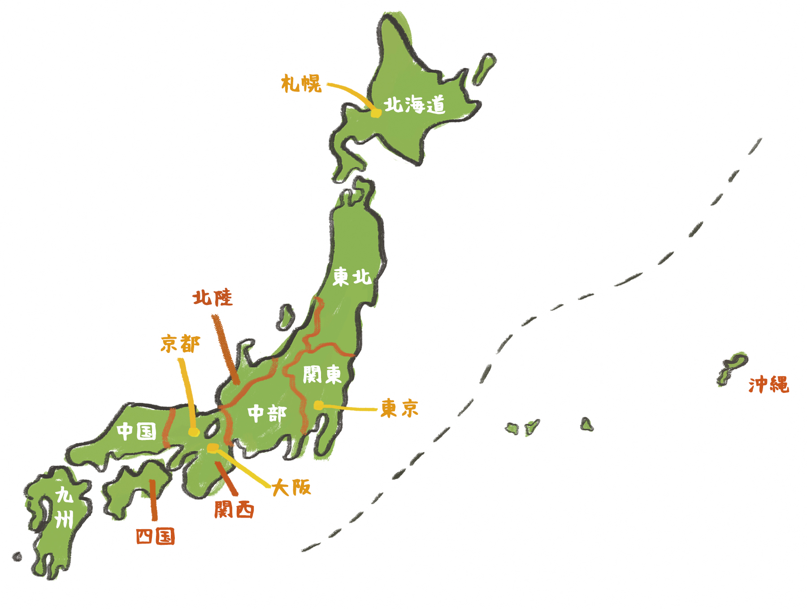
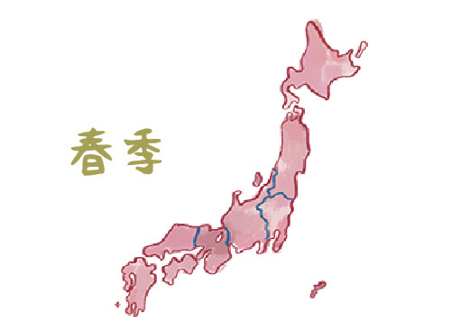
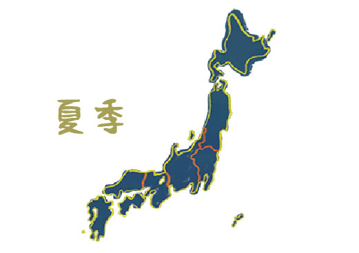
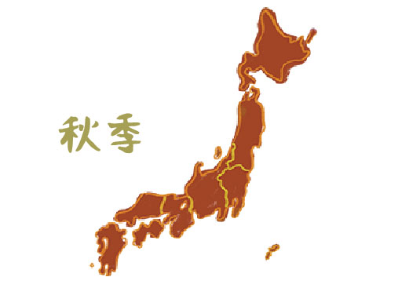
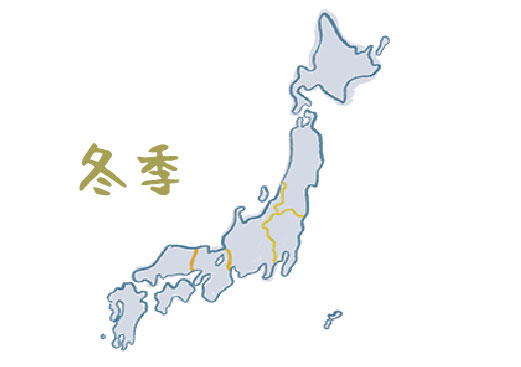

Toggle navigation
看地圖找景點
玩樂地圖
關東地區
關西地區
中部地區
北陸地區
中國地區
九州地區
四國地區
東北地區
沖繩地區
北海道地區
春季地圖
夏季地圖
秋季地圖
冬季地圖
訪問計畫
地域團體訪問
旅日台灣人
我的日本好朋友
特輯
Guest House巡迴中
京都咖啡廳
京都手作市集
走訪美味下町
美味下町cafe
留學日記
關於我

SPECIAL MAPS




【東京】墨田區作家俱樂部-「美味下町」訪問篇
【東京】墨田區作家俱樂部-「美味下町」訪問篇
【東京】墨田區作家俱樂部-「美味下町」訪問篇